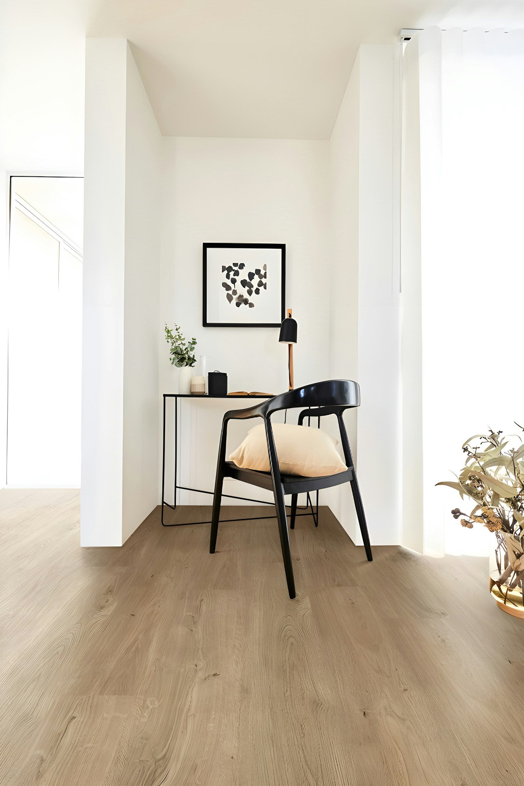
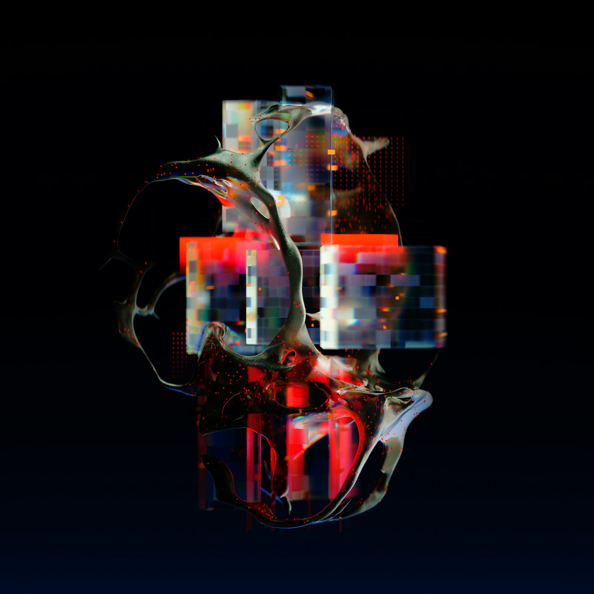

Design Files and Final Outputs
Finished visuals supported by editable files, export versions, and presentation-ready assets.
Design / AI / Python / data systems
I am a Computer Science student with hands-on work across design execution, AI applications, backend systems, dashboards, and full-stack projects. This portfolio brings together creative work, technical builds, and data-driven problem solving in one place.
Design work, AI projects, full-stack builds, and structured technical delivery

Final output plus editable AI, SVG, PSD, and QA note prepared for review.

Finished visuals supported by editable files, export versions, and presentation-ready assets.
Typography, contrast, hierarchy, spacing, alignment, composition, and brand polish.
Python, REST APIs, dashboards, evaluation workflows, frontend apps, and backend systems.
Clear problem solving, structured workflows, and a balance of visual quality with technical depth.
Visual direction

Clean design environment, focused execution, and review-ready presentation.
Contemporary machine-learning energy without losing warmth or clarity.

High-contrast, premium, and memorable visual tone for an AI-facing portfolio.
From concept to polished output, with editable assets and consistent visual presentation.
Backend systems, evaluation tools, automation, and data workflows built with practical engineering habits.
Projects shaped by model evaluation, validation, computer vision, and structured output analysis.
Selected work
Core strengths
My work sits between design, software, and AI. I enjoy building things that are clear, usable, measurable, and well-presented, whether that means a visual asset, a dashboard, an API, or a full application.
A polished square social creative with strong typography, contrast, spacing, offer hierarchy, and editable delivery files.
Social creatives, editable assets, export-ready files, and visual polish.
Responsive pages, clean interfaces, and project presentation with modern web tools.
APIs, authentication, databases, validation logic, and production-ready workflows.
Evaluation pipelines, document understanding, computer vision, and data-driven analysis.
More GitHub work
Resume
Best all-around version for software, AI, Python, data, and general technical roles.
Open general resumeFrames Python, backend systems, AI applications, data handling, and deployment experience.
Open Python resumeCovers sensor data processing, real-time monitoring, edge-to-cloud concepts, and automation.
Open IoT resumeCovers Python, C++, OOP, API development, debugging, optimization, and documentation.
Open software resumeExperience
Combines design execution, editable asset preparation, visual quality review, and technical project delivery.
Built an invoice analysis pipeline that extracted document fields with around 90% accuracy, saved analysts about 3 hours per report, and translated results into CO2e business metrics.
Built 6+ Power BI dashboards, optimized ASP.NET Core REST APIs, automated Microsoft Fabric and Azure Data Factory pipelines, and supported Azure deployments for data-driven reporting.
Developed a CNN, BiLSTM, and attention-based deepfake audio detection model using MFCC and mel-spectrogram features with 99.33% accuracy across multiple accent groups.
Designed a sensor-data monitoring concept with Python-based ingestion, real-time alerts, dashboard metrics, and edge-to-cloud automation thinking.
About
I am Dev Kumar Dahiya, a Computer Science and Engineering student at Amity University, Noida, with an 8.5 CGPA and practical experience across Python, AI, computer vision, cloud data platforms, dashboards, design work, and full-stack development.
My strongest work combines model thinking with product execution: extracting information from documents, evaluating outputs against ground truth, deploying interactive AI demos, and building APIs, ETL workflows, dashboards, and monitoring concepts that support real users. I enjoy projects that need both creative judgment and structured technical thinking.
"I want to develop, evaluate, and optimize AI-driven solutions that solve real business problems."
Contact